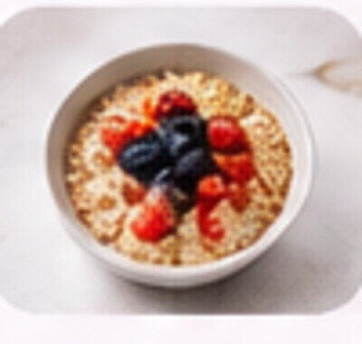

YOUR FOOD JOURNAL
Food Diary & Suggestions
▦
A MOMENT TO REFLECTProgress over
Progress over
perfection.
Keep a simple record of what you eat, one day at a time.

FOOD HISTORY
Your food diary
Choose a date to review, edit or remove your food records.
Total for selected date: 0 kcal
YOUR RECORDS
Food records
All food entries for the selected date.
Your food diary is empty.
PERSONAL FOOD IDEAS
Food suggestions
Select a nutrition goal or health condition to explore suitable food ideas.
Choose a goal and select Get suggestions.
Food suggestions provide general nutritional information only. They are not intended to diagnose, treat or replace professional medical advice.